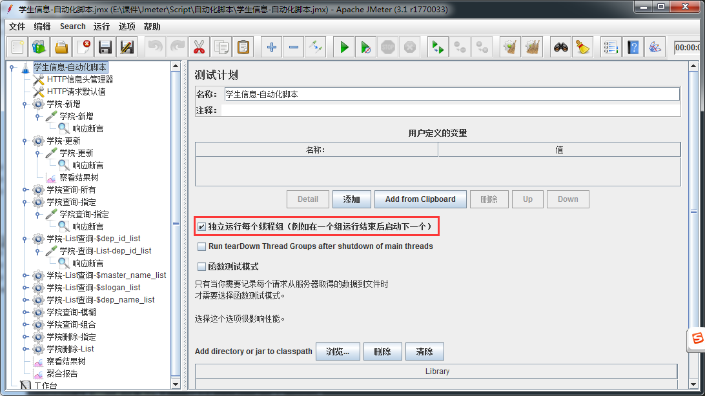
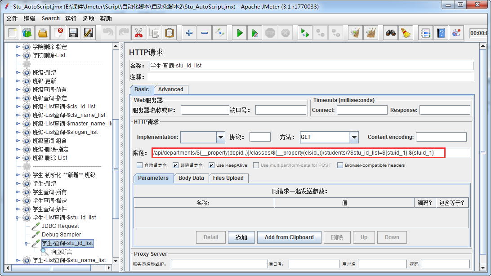
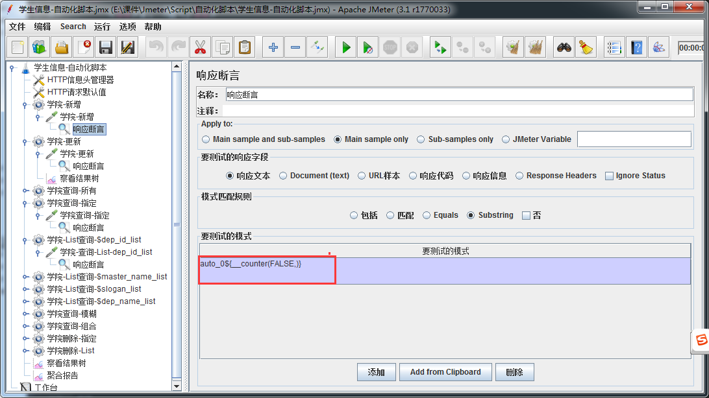
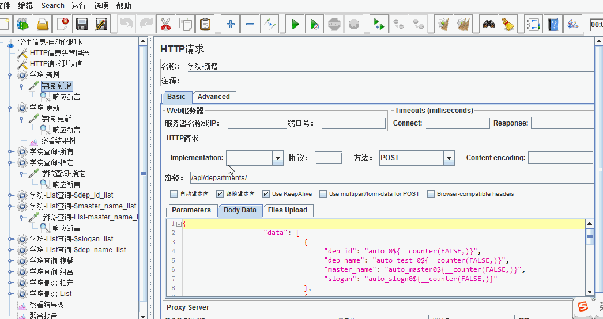
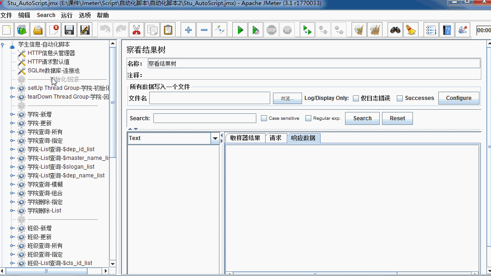

Jmeter 接口自动化脚本
目标
- 掌握自动化脚本设计原则；
- 掌握自动化脚本调优技巧；
为什么要设计自动化脚本？
1. 后台程序更新/发布新版之前需要验证下之前的功能是否能用
1. 自动化脚本设计原则：
1. 每个测试用例都是独立的
2. 测试用例都是可重复运行的
3. 测试数据与业务相分离（测试数据包括参数接口数据/ 测试执行所需要的系统数据)
4. 测试完成后，要删除不必要的测试数据。
2. 自动化脚本设计组件分析：
1. 使用数据库连接池
2. 使用setUp Thread Group线程组
3. 使用tearDown Thread Group线程组
4. 使用线程组
5. 使用函数
6. 使用关联
7. 添加断言
8. 使用sampler中请求
9. 添加聚合报告
3. 组件配置图
3.1 测试计划：
 勾选独立运行每个线程组（目的：保证线程组执行从上到下，保持先增后改再查再删原则）
3.2 HTTP请求：
 使用函数，确保无论运行多少次，保证唯一属性不重复
3.3 响应断言:

使用函数，确保每次请求后响应数据达到预期结果
4. 整体效果动态演示

5. 脚本执行含查数据库演示

6. 自动化脚本-总结
1. 使用数据库连接池
2. 使用setUp Thread Group线程组
3. 使用tearDown Thread Group线程组
4. 使用线程组
5. 使用函数（setProperty、Property、counter）
6. 使用关联
7. 添加断言
8. 使用循环
9. 使用sampler中（HTTP请求、BeanShell Sampler、JDBC Request、Debug Sampler）请求
10. 去除单接口察看结果树
11. 添加聚合报告
12. 将测试计划中独立运行每线程组勾选